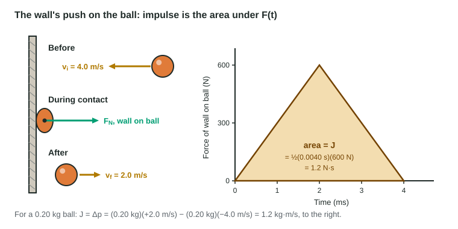

Change in Momentum and Impulse
Impulse J = F_avg Δt is the area under a force-time graph, and it equals the change in momentum.
Part 1 · Hook
Why this matters
Part 2 · Before you start
What this builds on
Part 3 · Prerequisite check
Quick check before you start
1. Momentum is
- mass times velocity
- mass times acceleration
- force times distance
- ½mv²
Show the answer
p = mv.
- Correct: mass times velocity:
- mass times acceleration:
- force times distance:
- ½mv²:
2. On a velocity-time graph, the area under the curve gives the
- displacement
- acceleration
- force
- speed
Show the answer
Area under v-t is Δx; slope is acceleration.
- Correct: displacement:
- acceleration:
- force:
- speed:
3. Newton's second law for an object of constant mass is
- F_net = ma
- F_net = mv
- F_net = m/a
- F_net = ½ma²
Show the answer
The net force equals mass times acceleration.
- Correct: F_net = ma:
- F_net = mv:
- F_net = m/a:
- F_net = ½ma²:
Part 4 · See it
See it first

Part 5 · Step by step
How it works, step by step
- A force acts on an object over a time intervalit delivers an impulse J = F_avg Δt, the area under the force-time graph, in N·s
- The impulse acts on the objectthe object's momentum changes by exactly that amount: J = Δp
- The change in momentum is fixed (stop from a given speed)a longer contact time means a smaller average force
- Momentum is graphed against timethe slope of the p-t graph is the net force: F_net = Δp/Δt
Part 6 · Key ideas
Key ideas
- Impulse J = F_avg Δt, a vector along the force, in N·s (= kg·m/s). It is the area under a force-time graph.
- The impulse-momentum theorem: J_net = Δp = m v_f − m v_i. Keep the signs: a bounce reverses v.
- The same Δp over a longer time needs a smaller force: airbags, mats, bent knees.
- F_net = Δp/Δt, the slope of a momentum-time graph. For constant mass this is Newton's second law, F_net = ma.
Part 7 · Misconception
A common mistake
The wrong idea: Momentum is force times time, so p = Ft.
What actually happens: Force times time is the impulse, which equals the change in momentum, Δp = F_avg Δt. Momentum itself is mv.
Part 8 · Check yourself
Check yourself
Exam-style questions. Anything you miss goes into your review queue.
Diagram
A ball bounces off a wall
The ball has a mass of 0.20 kg. Take right as positive.
1. Use the graph to find the impulse the wall exerts on the ball. Give the value and its unit.
Type a number and its unit.
Show the answer
Impulse = area under F-t = ½(0.0040 s)(600 N) = 1.2 N·s, to the right.
- Answer: 1.2 N·s
2. What is the ball's change in momentum, in kg·m/s? Include the sign.
Type a number in kg·m/s.
Show the answer
Δp = m v_f − m v_i = (0.20)(+2.0) − (0.20)(−4.0) = +1.2 kg·m/s, matching the impulse: J = Δp.
- Answer: 1.2 kg·m/s
3. What is the average force of the wall on the ball during the 4.0 ms contact, in newtons?
Type a number in N.
Show the answer
F_avg = J/Δt = 1.2 N·s / 0.0040 s = 3.0 × 10² N, half the peak, as expected for a triangle.
- Answer: 300 N
4. A softer ball with the same mass and the same speeds before and after stays in contact for 8.0 ms instead. How does the wall's force compare?
- Same impulse, half the average force
- Twice the impulse, same average force
- Same impulse, same average force
- Half the impulse, half the average force
Show the answer
J = F_avg Δt = Δp. Δp is the same, so doubling Δt halves F_avg. This is how airbags and helmets work.
- Correct: Same impulse, half the average force: Right: Δp is unchanged, so J is the same, spread over twice the time.
- Twice the impulse, same average force: The impulse equals Δp, which has not changed.
- Same impulse, same average force: Spreading the same impulse over more time lowers the average force.
- Half the impulse, half the average force: The impulse is fixed by the change in momentum, 1.2 N·s.
5. On a graph of force against time, what represents the impulse?
- The slope of the curve
- The highest force on the graph
- The area under the curve
- The time at which the force is largest
Show the answer
Impulse J = area under F against t. On a p-t graph, the slope is the net force.
- The slope of the curve: The slope is a rate of change of force, not an impulse.
- The highest force on the graph: A peak force says nothing about how long it acted.
- Correct: The area under the curve: Right: impulse is the sum of F Δt over the interval.
- The time at which the force is largest: Impulse needs force and time together.
6. An egg dropped onto a pillow is compared with the same egg dropped from the same height onto a hard floor (where it stops sooner). Predict how each pillow value compares with the floor value.
| Variable | Change |
|---|---|
| The egg's change in momentum | — |
| The impulse on the egg | — |
| The average force on the egg | — |
Show the answer
J = Δp is the same; F_avg = J/Δt is smaller on the pillow because the stop takes longer.
- The egg's change in momentum: no change. It arrives at the same speed and stops in both cases.
- The impulse on the egg: no change. Impulse equals the change in momentum.
- The average force on the egg: decreases. The same impulse is spread over a longer time on the pillow.
Part 9 · Summary
Summary
Part 10 · Up next
What comes next
Part 11 · Connections